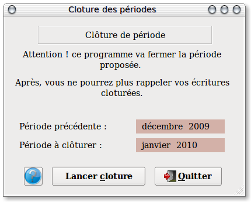

~ Comptabilité Laurux ~

~ Comptabilité Laurux ~ |
|
|
|

Programme de clotûre mensuelle.
Rappel : Pensez à faire une sauvegarde avant de lancer ce traitement.
----------------------------------------------------------------------------------------------------------------------